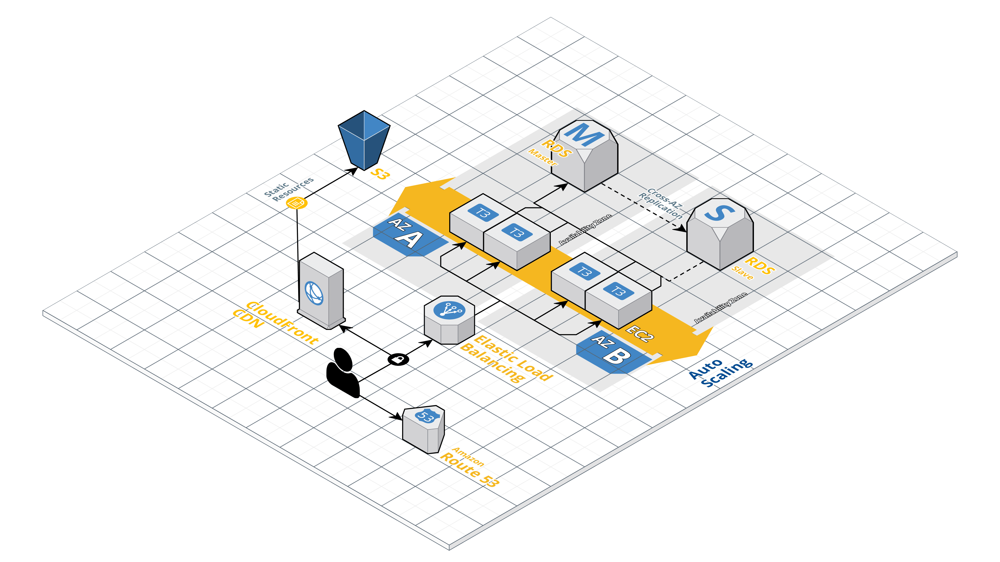

<!-- BEGIN: Page content -->
<section>
		<div class="view gallery-page">
			<div class="content">
				<div class="view-wrapper">
					<div class="view">
						<div class="item-content">
							<div class="container">
								<h3>Spybat <span class="highlight">Sound Tracker</span></h3>
								<div class="row">
									<div class="col-md-9">
										
									</div>
									<div class="col-md-3">
										<h4>Descrição do Projeto</h4>
										<p>O Spybat Sound Tracker literalmente nasceu na AWS, utilizando o melhor do que o provedor tem a oferecer, porém percebeu que precisava crescer e evoluir sua plataforma, desde a utilização de seu CMS até o aplicativo de tracking propriamente dito, buscando aprimoramento nas verticais de segurança e alta disponibilidade.</h4>
										<p><span class="field">Cliente:</span> Spybat Sound Tracker</p>
										<p><span class="field">Data:</span> 2019</p>
										<p><span class="field">Tags:</span> Consultoria, Infraestrutura como código, Segurança</p>
									</div>
								</div>
							</div>
						</div>
					</div>
				</div>
			</div>
		</div>
	</section>